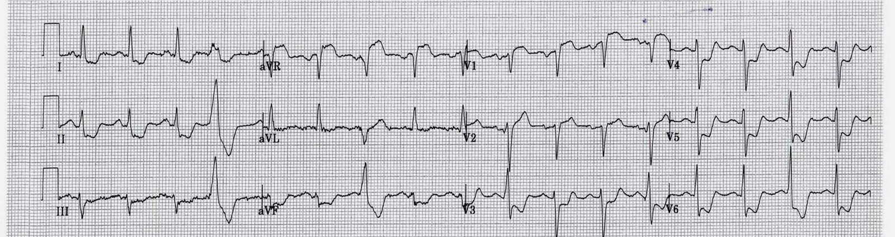
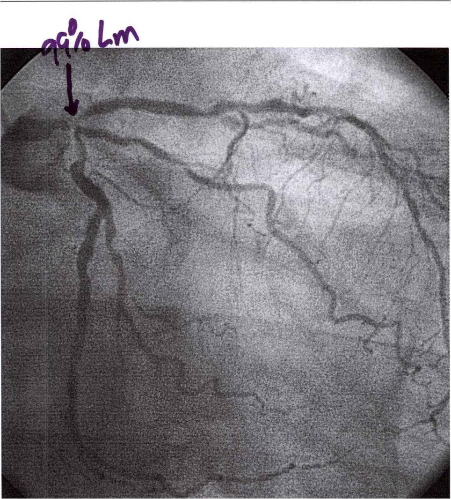
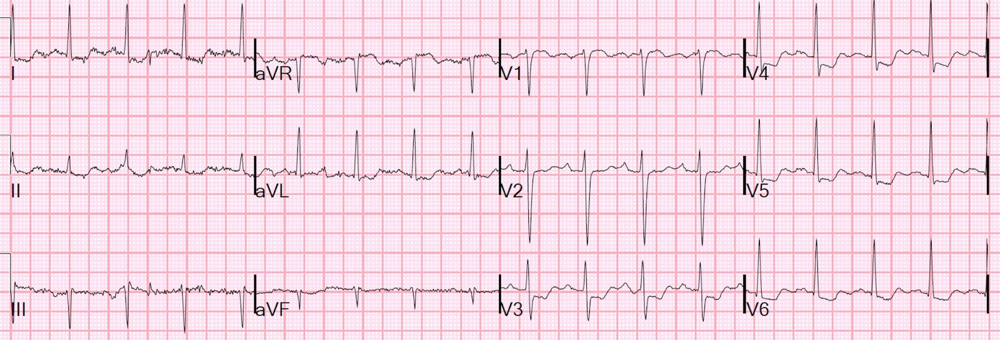
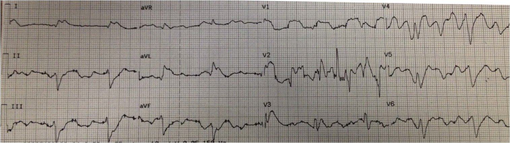
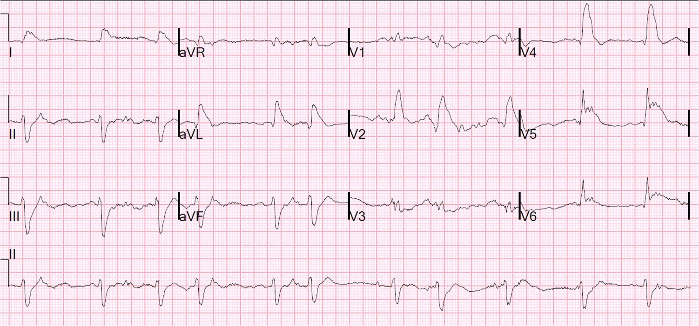
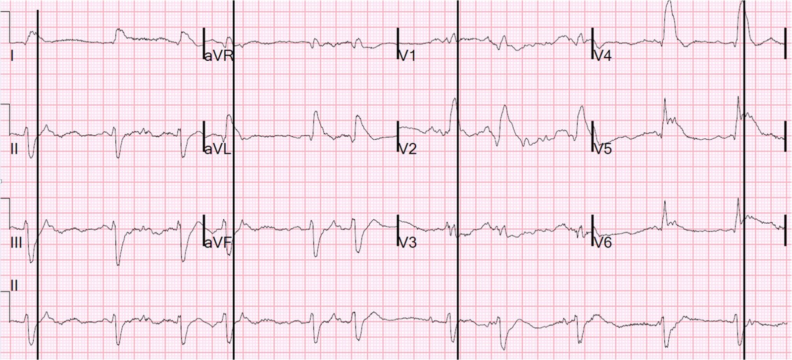

02/08/2014 — ST chênh lên ở chuyển đạo aVR, kèm ST chênh xuống lan tỏa, không biểu thị tắc thân chung động mạch vành trái
Bản dịch tiếng Việt của bài "ST Elevation in Lead aVR, with diffuse ST depression, does not represent left main occlusion" – Dr. Smith’s ECG Blog. Giữ nguyên toàn bộ 6 hình ảnh và 1 video của bản gốc.
Có nhiều công bố cho rằng ST chênh lên ở chuyển đạo aVR, kèm ST chênh xuống lan tỏa ở các chuyển đạo khác, là do tắc thân chung động mạch vành trái (left main, LM). Điều này thậm chí còn được nêu trong hướng dẫn STEMI mới nhất năm 2013 của ACC/AHA (O’Gara PT và cs. JACC 61(4):e83; ngày 29 tháng Một năm 2013). Tuy nhiên, hướng dẫn này lại dùng làm bằng chứng một bài báo của Jong và cs. (Int Ht J 2006; 47(1):13-20). Bài báo đó định nghĩa “tắc” một cách gây hiểu lầm là bất kỳ mức hẹp nào lớn hơn 50%, trong khi lẽ ra phải định nghĩa là 100%, hoặc gần như vậy. Tất cả các bài báo khẳng định ST chênh lên ở aVR là dấu hiệu của tắc LM đều nhầm lẫn tắc LM với thiểu năng LM (LM insufficiency). Trên thực tế, ST chênh lên do thiếu máu cục bộ ở aVR xảy ra trong hai nhóm lớn: 1) ở bệnh nhân có STEMI đã được nhận diện (do tắc mạch vành, thường là LAD), và khi đó đi kèm tỷ lệ tử vong cao hơn so với bệnh nhân không có ST chênh lên (STE) ở aVR; và 2) ở bệnh nhân không có ST chênh lên do thiếu máu cục bộ, khi đó luôn có ST chênh xuống lan tỏa của thiếu máu cục bộ dưới nội tâm mạc (có thể do mất cân bằng cung-cầu hoặc do hội chứng vành cấp (ACS)). Nếu do ACS, STE ở aVR này không chỉ đi kèm thiểu năng LM cấp, mà cũng có thể đi kèm bệnh 3 nhánh mạch vành, hoặc thiểu năng LAD.
Knotts và cs. nhận thấy chỉ 23% bệnh nhân có hình ảnh STE ở aVR có bất kỳ bệnh lý LM nào (còn ít hơn nếu định nghĩa là hẹp ≥ 50%). Chỉ 28% bệnh nhân có ACS ở bất kỳ nhánh mạch nào, và trong số đó, LM là thủ phạm ở chỉ 49% (14% tổng số ca). Đây là dấu hiệu sẵn có trên điện tâm đồ nền ở 62% bệnh nhân, thường do LVH. Tài liệu tham khảo: Knotts RJ, Wilson JM, Kim E, Huang HD, Birnbaum Y. Diffuse ST depression with ST elevation in aVR: Is this pattern specific for global ischemia due to left main coronary artery
disease? Tạp chí J Electrocardiol 2013;46:240-8.
Hãy xem điện tâm đồ này ở một bệnh nhân đau ngực cấp:


ST chênh lên ở aVR là soi gương của vectơ ST chênh xuống hướng ra trước, sang bên và xuống dưới (về phía chuyển đạo II và V5). Do đó STE ở aVR là ST chênh lên soi gương (reciprocal)! Đây là phim chụp mạch vành:


trái cấp máu. Sự hạn chế này gây thiếu máu cục bộ dưới nội tâm mạc với ST chênh xuống, nhưng không gây thiếu máu cục bộ xuyên thành với ST chênh lên. Đây không phải là tắc thân chung trái.
Lớp dưới nội tâm mạc dễ bị thiếu máu cục bộ hơn lớp thượng tâm mạc do nằm gần buồng thất trái có áp lực cao và cũng do nằm xa các động mạch vành thượng tâm mạc (các động mạch xuyên vào tới nội tâm mạc phải đi một quãng dài hơn và băng qua lớp cơ tim có áp lực cao để tới lớp nội tâm mạc có áp lực cao).
Tất nhiên, đây là một tình huống rất nguy hiểm: cơ tim đang thiếu máu cục bộ, và nếu nguyên nhân là huyết khối (do ACS), thì huyết khối có thể, và thường xuyên, lan rộng gây tắc toàn bộ động mạch rồi dẫn đến STEMI.
Có bắt buộc phải kích hoạt phòng thông tim (cath lab) trong tình huống này không?
Rokos và cs. gọi đây là “tương đương STEMI” và đề nghị rằng
bệnh nhân nên được đưa ngay tới phòng thông tim (Rokos IC và cs. Catheterization and Cardiovasc Interventions 79:1092-1098; 2012). Tuy nhiên, trong dữ liệu họ trình bày ở bài báo này, có 11 bệnh nhân tắc thân chung trái thật sự; 5 người trong số đó có ST chênh lên ở chuyển đạo aVR. Nhưng phải đọc kỹ phần chữ nhỏ mới nhận ra rằng cả 11 bệnh nhân có thân chung trái là mạch thủ phạm đều được đưa vào nghiên cứu dựa trên tiêu chuẩn STEMI chuẩn trên điện tâm đồ chỉ điểm: 8 ca thành trước, 1 ca thành dưới, 1 ca LBBB, và 1 ca không có điện tâm đồ gửi về phòng xét nghiệm trung tâm. Nói cách khác, đây là những STEMI đã được chẩn đoán là STEMI và đồng thời có ST chênh lên ở chuyển đạo aVR; người ta không cần tới chuyển đạo aVR để chẩn đoán STEMI.
Vấn đề nan giải nảy sinh khi có STE ở aVR và ST chênh xuống ở nhiều chuyển đạo khác, và do đó không phải là STEMI kinh điển. Tình huống này có phải là tương đương STEMI không?
Như đã giải thích ở trên, ST chênh xuống như vậy kèm STE ở aVR biểu thị thiếu máu cục bộ dưới nội tâm mạc lan tỏa và cũng thường gặp ở các nguyên nhân thiếu máu cục bộ không phải ACS (mất cân bằng cung-cầu) như ở các nguyên nhân do ACS. Tình trạng này thường gặp ở bệnh nhân xuất huyết tiêu hóa, nhiễm khuẩn huyết, suy hô hấp, thiếu máu nặng, rối loạn nhịp nhanh, tăng huyết áp nặng, sốc, và nhiều bệnh cảnh khác.
Ví dụ, hãy xem ca ngộ độc carbon monoxide (CO) này, với nồng độ CO là 28%:


Chỉ nên kích hoạt phòng thông tim khi có ACS. Với các nguyên nhân không phải ACS gây
ST chênh xuống lan tỏa, hãy điều trị bệnh nền!
Tất nhiên, không phải lúc nào cũng dễ xác định cái nào đến trước, ACS hay bệnh
nền khác:
1)
Có phải ACS đã khởi phát tình trạng thiếu máu cục bộ, rồi dẫn đến sốc
tim, rồi dẫn đến phù phổi kèm thiếu oxy, suy hô
hấp và nhịp nhanh?
2)
Hay yếu tố khởi phát là chảy máu, thiếu oxy, hoặc tăng huyết áp nặng kèm
phù phổi rồi sau đó mới gây thiếu máu cục bộ?
Điều này
đòi hỏi đánh giá bệnh nhân cẩn thận về tình trạng thể tích tuần hoàn, các giá trị xét nghiệm, sự hiện diện của phù phổi và tất nhiên nhiều yếu tố khác nữa. Phải đánh giá bệnh nhân, với sự trợ giúp
của điện tâm đồ.
Bệnh nhân có ST chênh lên ở chuyển đạo aVR không do ACS sẽ bị chậm trễ điều trị thích hợp và sẽ chịu tổn hại khi kích hoạt phòng thông tim.
Hơn nữa, như đã nêu ở trên, ngay cả khi STE ở aVR kèm ST chênh xuống lan tỏa thực sự là do ACS, nó hàm ý các động mạch còn thông, chứ không phải bị tắc. Có những cơ sở mà ở đó
việc kích hoạt phòng thông tim tiêu tốn rất nhiều nguồn lực, và nếu việc kích hoạt phòng thông tim ban đêm không thật sự cần thiết, thì có thể chấp nhận tránh việc đó. Khi có thiếu máu cục bộ dưới nội tâm mạc lan tỏa (có thể là hoặc không phải là thiểu năng thân chung trái, mà cũng có thể là thiểu năng LAD, hoặc thiểu năng 3 nhánh), điều trị nội khoa bằng nitroglycerin, aspirin, thuốc chống huyết khối, và liệu pháp kháng tiểu cầu kép hoặc ba thuốc, rồi đánh giá lại, là hợp lý.
Thường thì huyết khối sẽ “nguội đi” và đau ngực cũng như các dấu hiệu điện tâm đồ sẽ hết (cả hai đều phải hết!). Nếu triệu chứng hết và ST chênh xuống cải thiện nhiều, thì bệnh nhân có thể chờ tới sáng để vào phòng thông tim, miễn là được theo dõi rất sát, tốt nhất là theo dõi đoạn ST liên tục bằng 12 chuyển đạo. Thiếu máu cục bộ do ACS kháng trị với điều trị nội khoa (triệu chứng dai dẳng hoặc dấu hiệu điện tâm đồ dai dẳng) đòi hỏi thông tim cấp cứu.
Tắc thân chung động mạch vành trái
Phần lớn các trường hợp tắc thân chung trái 100% không sống sót được
tới khoa cấp cứu (ED), hoặc đến trong tình trạng ngừng tim. Khi thông tim, chỉ 0,19% – 1,3% bệnh nhân
STEMI có tắc thân chung động mạch vành trái (LMCA) (hay 0,42% – 3% số STEMI thành trước).
Dưới đây là điện tâm đồ của một bệnh nhân ngã gục do rung thất, được hồi sức
kéo dài và đã tái lập tuần hoàn tự nhiên, nhưng trong tình trạng sốc tim:
Điện tâm đồ trước viện:


diễn giải, nhưng rõ ràng có QRS rộng với ST chênh lên ở I, aVL và V1, và
STE ở aVR rất ít hoặc không có (còn ở các chuyển đạo trước tim khác thì ai mà biết được?)
Điện tâm đồ tại khoa cấp cứu:


Đây là phiên bản có chú thích:


Điện tâm đồ này điển hình cho một bệnh nhân TẮC thân chung trái. Thực ra, đó không hẳn là tắc LM, mà là tắc đồng thời LAD và động mạch mũ, về bản chất là cùng một vấn đề.
–Nhịp một lần nữa lại khó đọc. Dường như có các sóng P không được dẫn truyền. Nhịp có thể là trên thất hoặc bộ nối, hoặc có thể là nhịp tự thất.
–QRS rộng. Nếu là nhịp trên thất, đây là RBBB + LAFB (thường gặp trong nhồi máu cơ tim diện rộng). Nếu là nhịp tự thất, thì nó xuất phát gần phân nhánh trái sau, do đó giống hình ảnh RBBB + LAFB.
—Dù thế nào đi nữa, có ST chênh lên ở I và aVL (nhồi máu cơ tim thành bên cao) kèm ST chênh xuống (STD) soi gương ở các chuyển đạo thành dưới. Cũng có ST chênh lên ở V2 và V4-V6.
Tắc thân chung trái tạo ra điện tâm đồ có các hội chứng chồng lấp của tắc LAD đoạn gần (STE ở V1-V6, I, aVL) và tắc động mạch mũ (STE thành bên và STEMI thành sau, vốn có ST chênh xuống ở V1-V4, điều này có thể làm giảm mức ST chênh lên của STEMI thành trước.
How does Acute Total Left Main Coronary occlusion present on the ECG? (Tắc hoàn toàn cấp tính thân chung động mạch vành trái biểu hiện thế nào trên điện tâm đồ?)
Dưới đây là phần bàn luận rõ ràng nhất về chuyển đạo aVR trong ACS mà bạn có thể tìm thấy.
Lưu ý phần này được chia thành 1) bàn luận chung (ngắn) 2) aVR trong STEMI và 3) aVR trong ACS không ST chênh lên (Non STE-ACS)
Phần sau đây về aVR trong ACS được trích từ một bài báo tôi viết năm 2013. Toàn văn có tại đây. Đoạn trích này được in lại từ Smith SW. Updates on the Electrocardiogram in Acute Coronary Syndromes. Tạp chí Current Emergency and Hospital Medicine Reports 2013; 1(1): 43-52.
1. Chuyển đạoaVR trong hội chứng vành cấp.
Điều quan trọng cần lưu ý là khi tôi dùng thuật ngữ “bệnh thân chung trái”, tôi không nói đến tắc mà nói đến thiểu năng; nghĩa là tắc nghẽn đủ để gây thiếu máu cục bộ, nhưng chưa tắc hoàn toàn.
Trong thập kỷ qua đã có cả một khối lượng y văn về ý nghĩa của ST chênh lên ở chuyển đạo aVR trong ACS, đặc biệt là ý nghĩa của nó đối với chẩn đoán tắc nghẽn thân chung động mạch vành trái (LMCA) và bệnh 3 nhánh mạch vành.63-68 Y văn này gây bối rối vì một vài lý do. Thứ nhất, các nghiên cứu không phải lúc nào cũng phân biệt rõ bệnh nhân có và không có STEMI. Thứ hai, “tắc nghẽn” LMCA hiếm khi được định nghĩa, khiến không rõ tắc nghẽn là 1) hoàn toàn, 2) không hoàn toàn (gần hoàn toàn), 3) hoàn toàn nhưng có tuần hoàn bàng hệ tốt hay 4) từng lúc. Thứ ba, các nghiên cứu gần như đều nhỏ, với một nhóm ACS do LMCA được xác định hồi cứu. Thứ tư, các dấu hiệu có thể bị ảnh hưởng bởi giải phẫu từng cá thể, tiền thích nghi do thiếu máu cục bộ (ischemic preconditioning), và
thời điểm ghi điện tâm đồ. Vì bệnh nhân tắc LMCA thường không sống sót tới phòng thông tim, xác suất tiền nghiệm của bất kỳ dấu hiệu điện tâm đồ dương tính nào cũng thấp, và mọi độ nhạy và độ đặc hiệu được báo cáo đều có thể làm sai lệch đánh giá của bác sĩ lâm sàng về sự hiện diện thực sự của bệnh.
Chuyển đạoaVR trong STEMI
Chuyển đạo aVR trong STEMI
được đề cao là quan trọng để nhận diện tắc LMCA.68 Vì bệnh nhân STEMI vốn đã được xác định là nhóm cần điều trị tái tưới máu ngay lập tức, tầm quan trọng chính của việc nhận ra tổn thương LMCA trong STEMI là 1) nhận ra tỷ lệ tử vong tăng đi kèm dấu hiệu này và 2) khả năng tránh dùng thienopyridine (ví dụ clopidogrel) ở những bệnh nhân này, vốn nhiều khả năng cần CABG và có thể bị chảy máu quá mức nếu đã dùng thienopyridine.
Chỉ 0,19% – 1,3% bệnh nhân STEMI có tắc LMCA, hay 0,42% – 3% số STEMI thành trước,69, 70 một phần vì bệnh nhân bị tắc thường không sống sót tới phòng thông tim. Tỷ lệ tử vong là 50%, và hơn 70% đến viện trong tình trạng sốc tim, vì vậy chẩn đoán ACS nặng và nhu cầu kích hoạt phòng thông tim thường hiển nhiên từ biểu hiện lâm sàng hơn là từ điện tâm đồ. Ngược lại, khoảng 10%
bệnh nhân STEMI thành trước có STE ít nhất 1 mm ở aVR (đo tại
60 ms sau điểm J),66 và 25% có STE ít nhất 0,5 mm ở aVR (đo tại 60 ms sau điểm J, so với đoạn TP).63 STE hoặc STD từ 1 mm trở lên trong
STEMI thành trước báo trước tiên lượng xấu hơn (so với không có STE hay STD), ngay cả
sau khi hiệu chỉnh theo STE hoặc STD ở nơi khác trên điện tâm đồ, nhưng chỉ có ST chênh xuống ở
aVR (“soi gương của tổn thương ở vùng chuyển đạo V7”) là còn có ý nghĩa khi
hiệu chỉnh theo mọi yếu tố điện tâm đồ và lâm sàng khác.66
STE ở aVR ít nhất 0,5 mm trong STEMI thành trước dự đoán nhồi máu cơ tim cấp (AMI) vùng vách (tắc LAD ở đoạn gần trước nhánh xuyên vách thứ nhất) với giá trị tiên đoán dương (PPV) và giá trị tiên đoán âm (NPV) là 70% và 80%,63 tốt hơn STE ở V1, vốn với điểm cắt > 2,5 mm có độ nhạy 12% và độ đặc hiệu 100%, với PPV và NPV là 100% và 39%.71 Kotoku và cs.64 cũng nhận thấy STE ở aVR tương quan với tắc LAD đoạn gần (so với đoạn xa) và tương quan nghịch
với LAD dài (so với ngắn), hay LAD “vòng qua mỏm” (wraparound), có chi phối thành dưới. Điều này dễ hiểu, vì tắc đoạn gần sẽ dẫn đến STEMI thành đáy (xem bên dưới), còn tắc đoạn xa của một LAD vòng qua mỏm (dài, “típ III”) sẽ dẫn đến STE thành dưới
làm giảm STE ở aVR theo cơ chế soi gương, hoặc dẫn đến STD ở aVR. Để đầy đủ, Wong cũng nhận thấy STE ở aVR trong STEMI thành dưới đi kèm kết cục
xấu hơn.66
Nghiên cứu của Yamaji và cs. được trích dẫn làm bằng chứng rằng STE ở aVR > STE ở V1 có độ nhạy 81% và độ đặc hiệu 80% trong việc xác định LMCA là thủ phạm.72 [Nhân tiện, nghiên cứu này đã được trích dẫn trong y văn về ACS nói chung;68 tuy nhiên, nó chỉ áp dụng cho STEMI, vì phương pháp nghiên cứu yêu cầu dòng chảy TIMI 0-1.] Nếu kết luận của nghiên cứu là chính xác, và xét rằng chỉ 0,4%-3% số ca tắc LMCA tới được phòng thông tim khi còn sống, thì giá trị tiên đoán dương (PPV) của STE ở aVR lớn hơn STE ở V1 chỉ là 1,6%-11%, khiến dấu hiệu này vô dụng. Hơn nữa, trong nghiên cứu của Kurisu và cs. trên các ca STEMI liên tiếp, được viết dưới dạng thư, 25 ca (khoảng 3% số ca có STE thành trước) có tắc LMCA; họ so sánh các số đo điện tâm đồ của 25 ca tắc LMCA với chỉ 30 ca cho mỗi loại tắc LAD, RCA và động mạch mũ liên tiếp, và thấy độ nhạy và độ đặc hiệu đối với LMCA, so với LAD, của STE ở aVR lớn hơn STE ở V1 là 40% và 93%, dẫn tới PPV chỉ 15%.70
Một cách giải thích được đề xuất cho STE ở aVR lớn hơn ở V1 trong STEMI do LMCA (do tắc) là aVR nằm đối diện vùng vách đáy bị tổn thương. STE ghi được ở V1, và có lẽ cả ở các chuyển đạo trước tim phải khác V2-V4, bị giảm bớt một phần bởi ST chênh xuống soi gương của STEMI thành sau do tắc nghẽn dòng chảy trong động mạch mũ. Lời giải thích hợp lý nhất cho STE ở cả aVL và aVR cũng tương tự: ngoài STEMI thành trước và vách đáy, còn có STEMI thành bên cao do mất dòng chảy động mạch mũ, khiến vectơ ST hướng lên trên (một STEMI “phía trên”), đồng thời hướng ra trước.65
Chuyển đạoaVR trong Non-STE-ACS
Trước đây chuyển đạo aVR bị bỏ qua vì nó ngược hướng 180° so với một chuyển đạo tưởng tượng nằm giữa chuyển đạo I và II, và do đó sẽ không cung cấp dữ liệu độc lập nào. Các khẳng định gần đây hơn rằng ST chênh lên ở aVR độc lập với ST chênh xuống ở các chuyển đạo đối diện này chưa được chứng minh đối với Non-STEMI, mặc dù điều này có vẻ đúng với STEMI (xem ở trên). Tuy vậy, sẽ tiện lợi khi dùng một chuyển đạo có ST chênh lên (aVR) để thay thế cho nhiều chuyển đạo khác có ST chênh xuống, sao cho, trong Non-STE-ACS, mức độ ST chênh lên ở aVR tương quan với số chuyển đạo có ST chênh xuống, độ sâu của ST chênh xuống, và tổng các mức ST chênh xuống.67, 73-76
Trong mọi nghiên cứu, đoạn ST được đo tại 80 ms sau điểm J đối với ST chênh xuống và 20 ms sau điểm J đối với ST chênh lên, cả hai đều so với đoạn TP.
Tóm tắt thật ngắn gọn y văn: ST chênh xuống lan tỏa có PPV và NPV tốt đối với bệnh 3 nhánh và bệnh thân chung trái (không phải tắc!).73, 77 Mức độ STE ở aVR, dù không độc lập với ST chênh xuống, có liên quan chặt với kết cục, độc lập với các yếu tố lâm sàng như phân độ Killip và huyết áp.74, 76 Barrabes và cs. nghiên cứu 775 ca Non-STEMI và nhận thấy, so với không có STE ở aVR, STE từ 0,5 đến 1,0 mm có tỷ số chênh (OR) tử vong là 4,2 (1,5 – 12,2), và STE ≥ 1,0 mm có OR là 6,6 (2,5 – 17,6).74 Có 475 bệnh nhân được chụp mạch vành; trong số những người có STE ≥ 1 mm ở aVR (n=92), 48% có bệnh 3 nhánh và 18% có bệnh LMCA, so với 21% và 4% ở những người có STE ở aVR dưới 1 mm.74 Kosuge và cs.75 (2005) nghiên cứu 310 bệnh nhân ACS không có STE. Họ nhận thấy STE ở
aVR ≥ 0,5 mm là yếu tố dự báo mạnh nhất của bệnh LMCA hoặc bệnh 3 nhánh, với
OR là 19,7, và nó xác định bệnh LMCA hoặc bệnh 3 nhánh với độ nhạy 78% và
độ đặc hiệu 86%, PPV và NPV là 57% và 95%. Cuối cùng, Szymanski và cs. năm 2008 nhận thấy tỷ lệ tử vong tương quan với mức độ STE ở chuyển đạo aVR, độc lập với điểm TIMI, và liên quan mạnh với ST chênh xuống ở nhiều vị trí.
Năm 2011, Kosuge và cs.67 nghiên cứu 572 bệnh nhân Non-STE-ACS; trong 196 người có troponin T dương tính lúc nhập viện, độ nhạy và độ đặc hiệu của STE ≥ 1,0 mm ở aVR đối với bệnh LMCA hoặc bệnh 3 nhánh là 80% và 93%, với PPV 56% và NPV 98%, và độ chính xác 92%. OR của mức độ STE ở aVR đối với bệnh 3 nhánh nặng hoặc bệnh LMCA trong toàn bộ bệnh nhân là 29 (9,5 – 50). CABG được thực hiện ở 46%
số người có bệnh 3 nhánh nặng hoặc bệnh LMCA so với 2% ở những người không có. Các tác giả đề nghị tạm ngừng clopidogrel ở bệnh nhân Non-STEMI có STE ở aVR ít nhất 1 mm.
Tóm tắt
về chuyển đạo aVR trong ACS:
Như vậy, STE ở aVR trong Non-STEMI, dù không độc lập với ST chênh xuống
ở nơi khác, là một ước lượng tốt cho tổng STD và là một yếu tố
dự báo rất hữu ích cho kết cục xấu và cho nhu cầu CABG, độc lập với các dữ liệu lâm sàng
khác. Trong Non STE-ACS, STE ở aVR là soi gương của ST chênh xuống lan tỏa, ngược hướng (soi gương) với một vectơ ST âm hướng về I, II và V5, và là hậu quả của thiếu máu cục bộ dưới nội tâm mạc.
Mặt khác, STE ở aVR trong STEMI, thường là STEMI thành trước, nhiều khả năng là hậu quả của tổn thương xuyên thành (STEMI vùng vách đáy). Trong trường hợp sau này, STE ở aVR không phải là soi gương của bất kỳ ST chênh xuống nào, mà trực tiếp biểu thị tổn thương.
Cuối cùng, những ứng dụng thực tế phù hợp nhất là:
1) Trong Non-STEMI, nếu có STE ở aVR ≥ 1,0 mm, có thể thận trọng tạm ngừng clopidogrel
2) Trong cả STEMI và Non-STEMI, mức độ STE ở aVR tương quan với
bệnh nặng hơn và kết cục xấu hơn, độc lập với biểu hiện lâm sàng; những bệnh nhân này phải được điều trị tích cực bằng chụp mạch vành sớm và tái thông mạch.
Tài liệu tham khảo
Tương đương STEMI:
1. Jong, GP và cs. Reciprocal Changes in 12-Lead Electrocardiography Can Predict Left Main Coronary Artery Lesion in Patients With Acute Myocardial Infarction. Tạp chí International Heart Journal 47:13-20; 2006.
2. Rokos IC và cs. Correlation Between Index Electrocardiographic Patterns and Pre-Intervention Angiographic Findings: Insights From the HORIZONS-AMI Trial. Tạp chí Catheterization and Cardiovascular Interventions 79:1092-1098; 2012.
3. Rokos IC. French WJ.
Mattu A và cs. Appropriate Cardiac Cath Lab activation: Optimizing electrocardiogram interpretation and clinical decision making for acute ST-elevation myocardial infarction. Tạp chí Am Heart J 2010;160:995-1003.e8
63. Aygul N, Ozdemir K, Tokac M, và cs. Value of lead aVR in predicting acute occlusion of proximal left anterior descending coronary artery and in-hospital outcome in ST-elevation myocardial infarction: an electrocardiographic predictor of poor prognosis. Tạp chí J Electrocardiol 2008;41(4):335-41.
64. Kotoku M, Tamura A, Abe Y, Kadota J. Determinants of ST-segment level in lead aVR in anterior wall acute myocardial infarction with ST-segment elevation. Tạp chí J Electrocardiol 2009;42(2):112-7.
65. Nikus KC, Eskola MJ. Electrocardiogram patterns in acute left main coronary artery occlusion. Tạp chí J Electrocardiol 2008;41(6):626-9.
66. Wong CK, Gao W, Stewart RA, French JK, Aylward PE, White HD. The prognostic meaning of the full spectrum of aVR ST-segment changes in acute myocardial infarction. Tạp chí Eur Heart J 2012;33(3):384-92.
67. Kosuge M, Ebina T, Hibi K, và cs. An early and simple predictor of severe left main and/or three-vessel disease in patients with non-ST-segment elevation acute coronary syndrome. Tạp chí Am J Cardiol 2011;107(4):495-500.
68. Lead aVR: Importance of the “Forgotten 12th Lead” in Patients With ACS. Medscape Emergency Medicine, 2009. (Truy cập ngày 20 tháng Bảy năm 2012, tại http://www.medscape.com/viewarticle/589781.)
69. Zoghbi GJ, Misra VK, Brott BC, và cs. ST Elevation Myocardial Infarction due to Left Main Culprit Lesions: Percutaneous Coronary Intervention Outcomes (tóm tắt). Trong: Tạp chí Journal of the American College of Cardiology; ngày 9 tháng Ba năm 2010; Georgia; 2010. tr. E1712.
70. Kurisu S, Inoue I, Kawagoe T, và cs. Electrocardiographic features in patients with acute myocardial infarction associated with left main coronary artery occlusion. Tạp chí Heart 2004;90(9):1059-60.
71. Engelen DJ, Gorgels AP, Cheriex EC, và cs. Value of the electrocardiogram in localizing the occlusion site in the left anterior descending coronary artery in acute myocardial infarction. Tạp chí J Am Coll Cardiol 1999;34(2):389-95.
72. Yamaji H, Iwasaki K, Kusachi S, và cs. Prediction of acute left main coronary artery obstruction by 12-lead electrocardiography. ST segment elevation in lead aVR with less ST segment elevation in lead V(1). Tạp chí J Am Coll Cardiol 2001;38(5):1348-54.
73. Gorgels AP, Vos MA, Mulleneers R, de Zwaan C, Bar FW, Wellens HJ. Value
of the electrocardiogram in diagnosing the number of severely narrowed coronary
arteries in rest angina pectoris. Tạp chí Am J Cardiol 1993;72(14):999-1003.
74. Barrabes JA, Figueras J, Moure C, Cortadellas J, Soler-Soler J. Prognostic value of lead aVR in patients with a first non-ST-segment elevation acute myocardial infarction. Tạp chí Circulation 2003;108(7):814-9.
75. Kosuge M, Kimura K, Ishikawa T, và cs. Predictors of left main or three-vessel disease in patients who have acute coronary syndromes with non-ST-segment elevation. Tạp chí Am J Cardiol 2005;95(11):1366-9.
76. Szymanski FM, Grabowski M, Filipiak KJ, Karpinski G, Opolski G. Admission ST-segment elevation in lead aVR as the factor improving complex risk stratification in acute coronary syndromes. Tạp chí Am J Emerg Med 2008;26(4):408-12.
77. Barrabes JA, Figueras J, Moure C, Cortadellas J, Soler-Soler J. Prognostic significance of ST segment depression in lateral leads I, aVL, V5 and V6 on the admission electrocardiogram in patients with a first acute myocardial infarction without ST segment elevation. Tạp chí J Am Coll Cardiol 2000;35(7):1813-9.